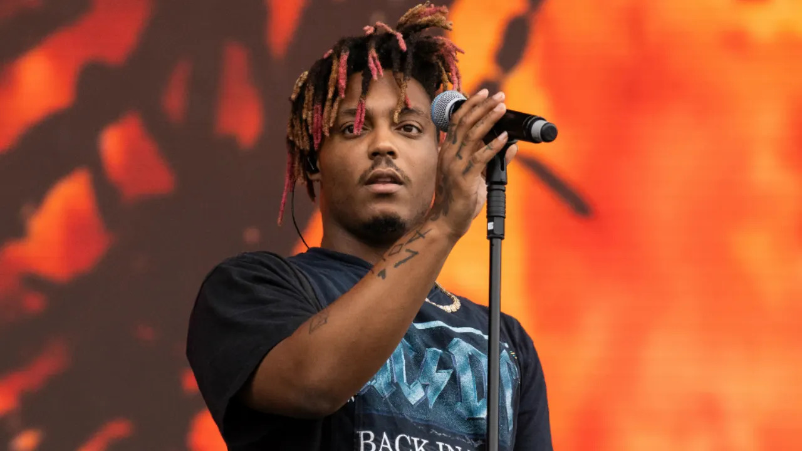

Dentro de esta pagina veremos un poco a cerca de Juice WRLD

Jarad Anthony Higgins, más conocido por su nombre artístico Juice WRLD,
fue un rapero, cantante, compositor y músico estadounidense.
Nacio el 2 de diciembre de 1998 y fallecio el 8 de diciembre del 2019.
Dentro de éste, su primer album de estudio lanzado el 23 de mayo de 2018, se incluyen canciones como:
En este mixtape colaborativo de los raperos Future y Juice WRLD, lanzado el 19 de octubre de 2018, se incluyen canciones como:
Siendo este el segundo album de estudio del rapero, fue lanzado el 8 de marzo de 2019 e incluye canciones como:
Es el tercer album del rapero y el primer album postumo despues de su muerte, fue lanzado el 10 de julio de 2020.
Incluye canciones como:
Es el cuarto album de estudio del rapero y el segundo album postumo a su muerte, fue lanzado el 10 de diciembre de 2021.
Incluye canciones como: